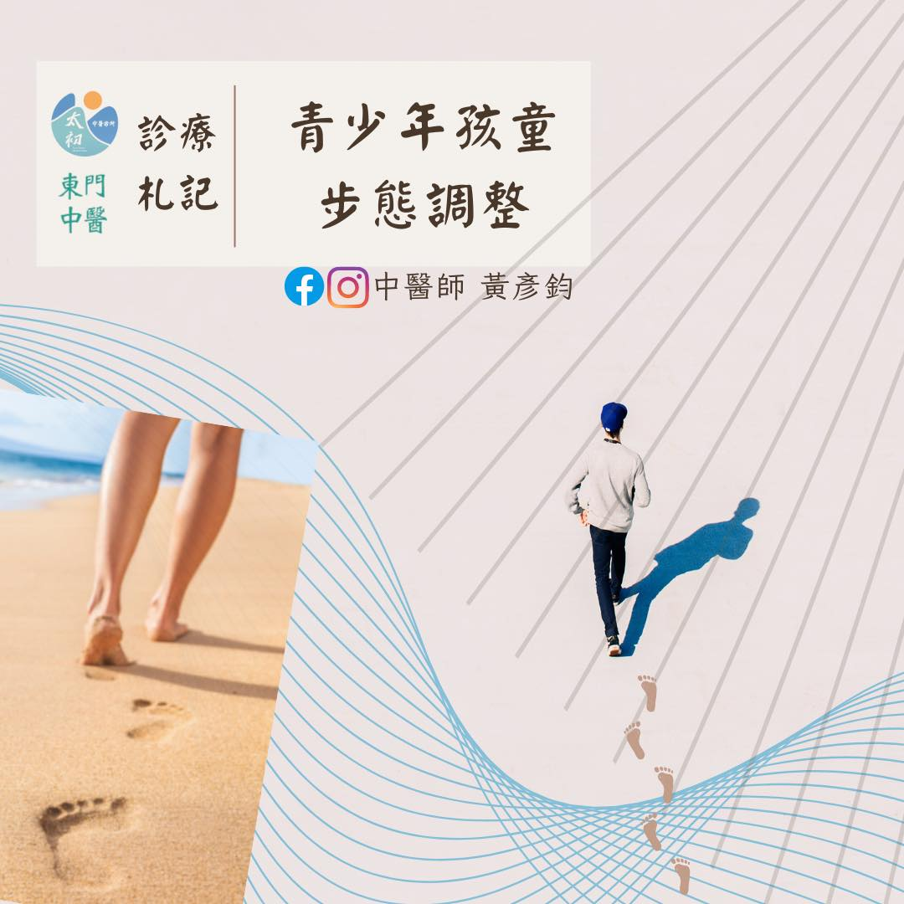

走路半墊半跳的國中生：一次步態觀察與分析
用心陪伴孩子成長的爸媽，對於孩子日常的變化總是最靈敏的，雖然有時難以用言語表達，但總有那神準的第六感讓爸媽感覺到孩子的差異。最近一對好友夫妻帶著讀國中的大女兒(小安)來到太初，爸媽總覺得小安的走路步態不對勁，但又說不上到底哪裡怪，媽媽表示近1-2年常觀察到小安走路用腳尖以小碎步的方式半墊半跳的走著，但小安表示身體軀幹腰髖都沒有異常不舒服的狀況。平常作息、飲食習慣也都符合青少年的標準常態。
平時除了學習骨傷科手法技巧，我也會花心思在解剖學、生物力學等其他不同領域卻又高度相關的學理應用方面學習。恰巧在半年前才剛學到關於步態的認識與分析，對於這類的步態問題，觀察紀錄是非常重要的第一關，如此才能進一步分析找出問題。於是我們用手機錄下治療前的走路步態，利用影片慢動作的前後回放，發現小安走路時，在腰胯力量傳遞不流暢，髖關節活動有明顯的僵硬感，導致小安多用膝蓋小腿來代償步態，而出現半墊半跳的方式走路。
分析到這，媽媽進一步補充提到，游泳時小安對於蛙式的掌控非常有障礙，無法完成蛙式的合腿與踢腿的動作，但自由式是完全沒問題。這也進一步確認小安的腰髖活動是現階段明顯的問題點。
主要問題找到了，處理的方式也就跟著出來了。排除了髖關節內部肌腱、韌帶的發炎或沾黏，利用徒手均抗的方法先校正錯位的骨盆，再處理腰髖部的大肌群與臀大肌、臀中肌，恢復主要屈伸的肌群該有的彈性與屈伸活動，處理後再以相同錄影方式記錄下處理後的步態。小安的步伐便流暢了許多，媽媽在旁一同觀察到處治前後的差異時緊繃的神情終於稍微放鬆了一些。雖然當下步態進步很值得高興，但其實真正重要的是後續回家的步態練習。已經習慣用膝蓋小腿代償走路的小安，必須開始刻意練習在走路時，讓步態力量往上傳遞來活動髖關節，以便讓身體回憶起遺忘已久的肌肉記憶，也才能保持自然的行走步態。再三囑咐小安與爸媽回家後的練習，便結束這次的診療。
除非有明顯的疼痛與不適感，孩童普遍對於身理心理狀態的變化不認識、不熟悉或不善於表達，作為爸媽，守護孩童健康責無旁貸。若已明顯觀察到有不對勁的地方，切勿猶疑，務必適時適當地尋求可靠的專業人士協助，才能真正地幫助孩子健康成長。
#步態調整 #骨盆校正
太初中醫診所 東門中醫
中醫師 薛博文
中醫安心講堂 褚衍強中醫師
